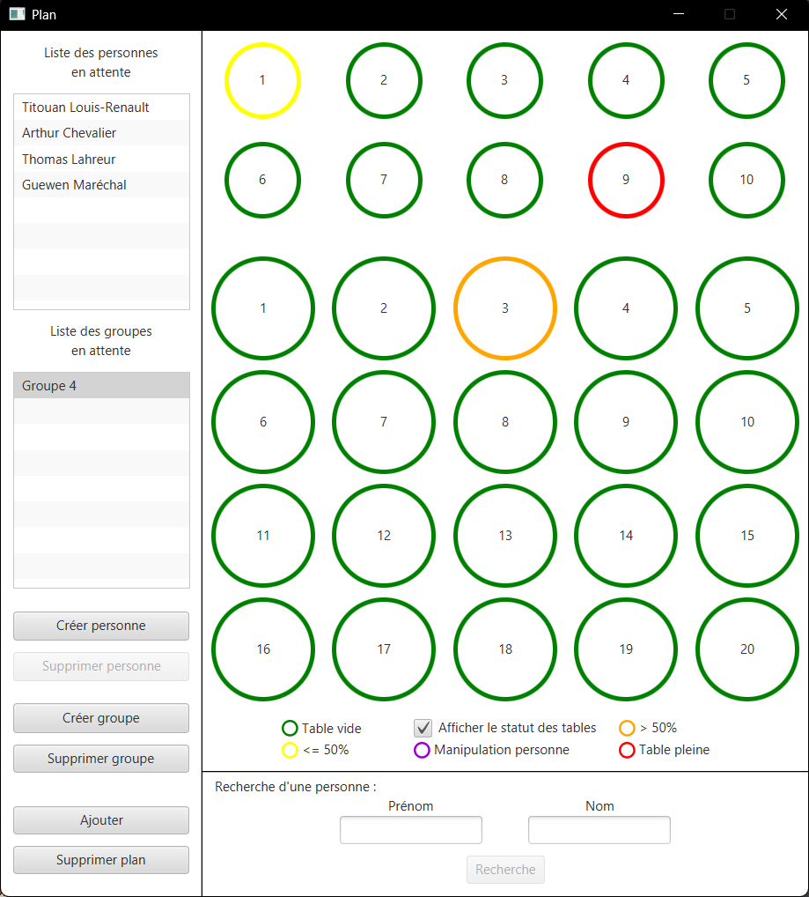

Projet : Développement d'une application en Java/JavaFX

🔍
×

Ce projet consiste à développer un module de gestion du plan de tables pour le gala de l’association fictive EllaDanse, en utilisant une application Java. Le module est conçu pour s’intégrer à l'application de gestion de l'association complète et permettre une organisation optimale des places en salle pour l'organisation du gala.
Les défis principaux comprenaient la gestion dynamique des tables, la fonctionnalité de recherche, et la lisaison de données entre l'interface graphique et le programme.
Une phase de tests a été menée pour s'assurer du bon fonctionnement des différentes fonctionnalités.
Technologies Utilisées
Programmation Java
Création d'interface JavaFX
Algorithmique
Développement d'application
Compétences Acquises
- Maîtrise approfondie du langage Java/JavaFX
- Manipulation d'une interface graphique
- Conception et implémentation d'une application
- Travail en équipe
- Tests unitaires et tests d'intégration